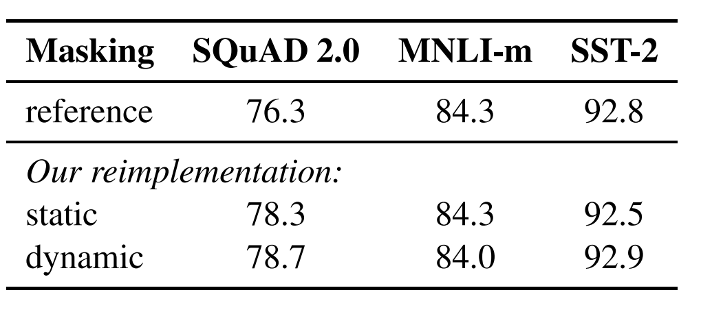
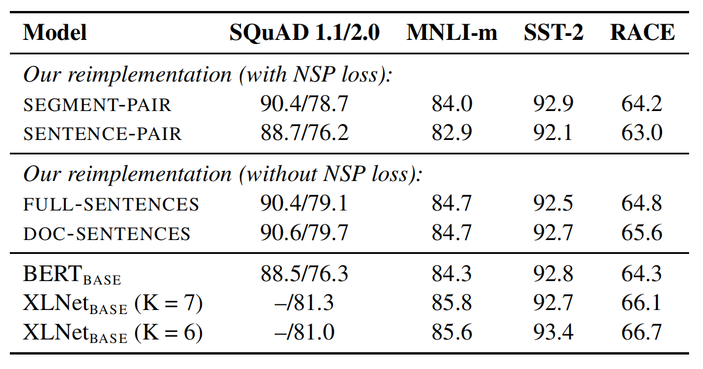
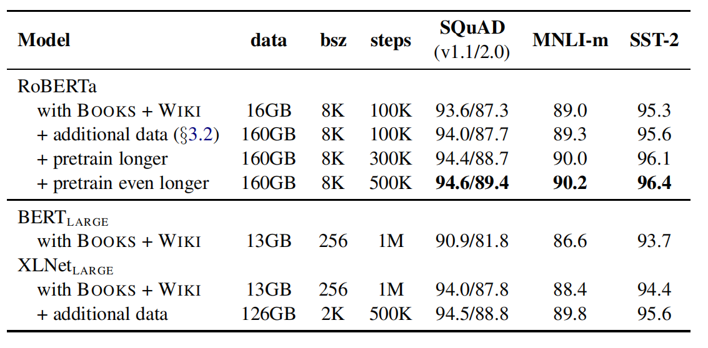

简介
RoBERTa是华盛顿大学和FaceBook在论文《RoBERTa: A Robustly Optimized BERT Pretraining Approach》提出的预训练模型，论文似乎仅存在arxiv版本。RoBERTa本质上是BERT的一个改进版本。论文发现BERT是未充分训练的，改进训练之后的RoBERTa在GLUE、RACE、SQuAD数据集上达到了SOTA。代码和模型公开在了github上。
相对于BERT的修改主要有以下方面：
- 训练时间更长、数据更大（提出了一个新的数据集CC-News）、batch更大（有论文指出更大的batch模型训练结果越好）
- 移除下句预测预训练任务
- 训练序列更长
- 动态改变数据的MASK，而BERT的MASK是固定的
在不使用额外的训练数据的情况下，RoBERTa在GLUE和SQuAD数据集上取得了优于BERT的性能。引入额外的训练数据后，RoBERTa在GLUE中的四项任务、SQuAD、RACE数据集上达到了SOTA。
实验
数据集
- GLUE（ General Language Understanding Evaluation，通用语言理解评估）：由9个句子或句子对的分类任务组成。
- SQuAD（ Stanford Question Answering Dataset，斯坦福问答数据集）：抽取式问答任务。给出文档和问题，从文档中选择部分文本作为问题答案。
- RACE（ ReAding Comprehension from Examinations，考试阅读理解数据集）：顾名思义，数据集来自考试题目，是一个分类任务。单个样本由文档、问题和若干个候选答案组成。正确答案不一定直接体现在文章中，需要深层理解文章并进行推断。
静态掩码vs动态掩码
论文将RoBERTa与参数量相近的\(BERT_{BASE}\)进行了比较，结果如下所示。可以看出，动态掩码的效果与静态掩码持平或者略优于。个人猜测原因是动态掩码虽然能够使得模型模型接触到更多数据、更加鲁棒，但频繁的动态掩码会使得某些样本无法得到充足的训练。

下句预测
下句预测任务是BERT中提出的预训练任务，用于判断两句话是否构成连续上下句的关系。BERT论文中认为下句预测任务是非常重要的，它提升了QNLI、MNLI、SQuAD数据集的性能。然而，一些工作开始质疑下句预测任务的有效性。RoBERTa论文中比较了以下几种训练方法：
- 句子段（连续多个句子）对+下句预测，也就是原版BERT的训练方法。
- 句子对+下句预测。
- 跨文档完整句子，将多篇文档拼接在一起，从中连续采样句子，可能跨文档也可能来自同一篇文档。
- 单文档句子，从单个文档中连续采样句子。
实验结果如下：

前两种训练方法比较，前者优于后者，说明独立的句子会损害下流任务的性能。接下来比较有无NSP任务的训练方法，分析后可以看出，完整句子移除了NSP任务，与拥有NSP任务的性能基本持平，在某些任务上还略胜一筹。而单文档句子任务甚至优于跨文档完整句子。
更大的Batch
机器翻译上的部分工作证实了大batch-size能够同时提高优化速度和任务性能，近期工作证实这同样适用于BERT，论文在\(BERT_{BASE}\)上进行了Batch-size的实验，结果如下：
可以看出，2k的batch size 确实要优于256，但8k却差于2k。论文中也没有进行解释，迷惑。
文本编码
字节对编码（Byte-Pair Encoding）是一种字词模型，BERT使用它来构建词表。然而当语料规模很大时，unicode字符会占据词表中相当大部分。2019年GPT2论文指出，可以使用unicode字节而非unicode字符来作为基本字词单元，然而这种方法可能会有轻微的性能损失（毕竟破坏了字符的完整结构），但是由于其能减小词表规模，RoBERTa还是基于此进行的词表构建。
RoBERTa
RoBERTa=BERT+动态掩码+跨文档完整句子+更大batch size+字节编码+更大数据+更长训练时间
实验结果如下：

控制训练数据时，RoBERTa已经优于\(BERT_{LARGE}\)了（但在SQuAD上逊于XLNET），在增加数据和训练更长时间后，三个数据集上全面超越XLNET。
后面就是GLUE、SQuAD上各项指标的实验和比较了，基本RoBERTa也是最优的，这里就略去了。
总结
RoBERTa可以看作是BERT真正的完全体吧，弥补了原生BERT的缺陷。可能是因为创新性不足？没有被会议接受。看来预训练模型也还是很卷的。。。